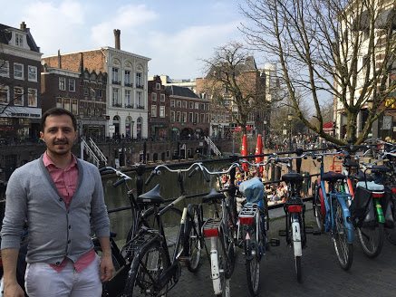

Personal Information

| Name: |
Enes Kocibar |
| Sex: |
Male |
| Date of Birth: |
01/10/1988 |
| Nationality: |
Kurdish/Turkish |
| Adress: |
103, Bornerbroeksestraat,
7621 AE Borne |
| e-mail: |
ekocibar@gmail.com |
I was born in Turkey and completed my university degree over there.Then worked as a Mathematics Teacher
in an International School in Bangladesh for 5 years.I have been in Netherlands for 6 months and want to
start a new career as a "developer".
Education and Training
- MsCSE, Uttara University, 2015
- Mathematics(Bachelor), Fatih University, 2011
- Pedagogical Teaching Certificate, Burch University, 2017
- Councellors' Training Program, British Council, 2016
- IAL Mathematics (Unit34) Understanding Assessment and Effective Delivery, Pearson Education, 2015
- Getting Ready to Teach The Pearson Edexcel IAL Mathematics, Pearson Education, 2013
- Professional Development in Mathematics, Zambak Education & Consultancy, 2013
- Teaching Mathematics, Zambak Education & Consultancy, 2012
Work Experience
- Mathematics/Statistics Teacher, 2011-2016
- Head of Mathematics Department, 2014-2016
- Academic Councellor, 2016
- Deputy Head, 2016
Learning Strategies
Use the following courses & websites
Resources
Here are essential HackYourFuture tools